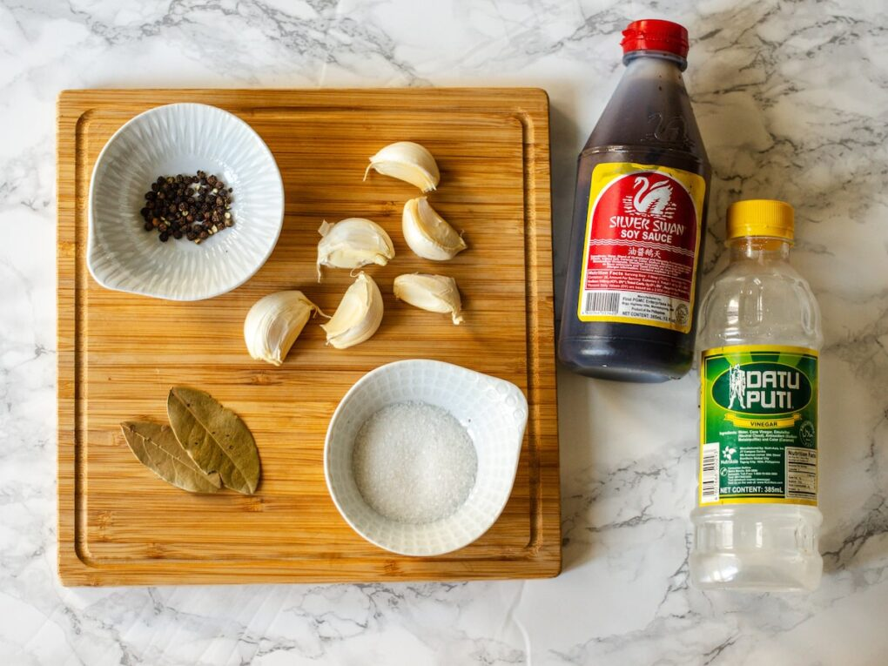
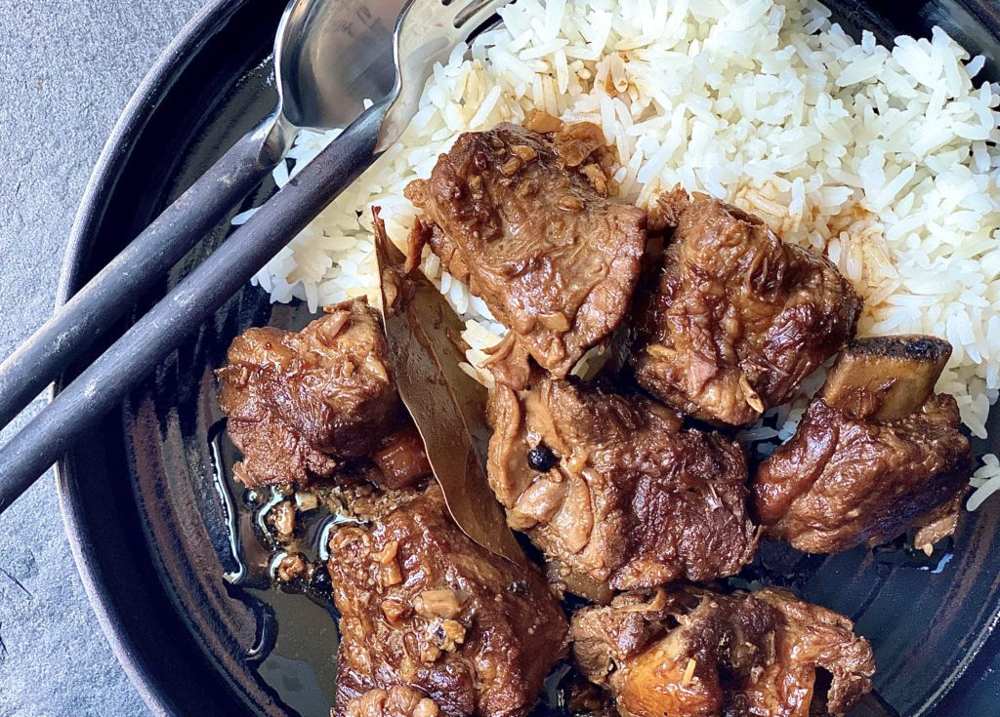

Title: My Culinary Adventure: A First Attempt at Cooking Adobo
Introduction:
Embark on a culinary journey with me as I attempt to recreate the classic Filipino dish,
adobo, for the very first time. Armed with a recipe I found on YouTube and a sense of
determination, I stepped into the kitchen ready to conquer the stove and create a masterpiece.

Following the Recipe:
With the video tutorial playing on my phone, I eagerly began to gather the ingredients and
follow along with the instructions. However, as I soon discovered, cooking is not as easy as
it looks on screen. Despite my best efforts, I found myself stumbling through each step,
struggling to keep up with the pace of the video.
A Series of Missteps:
From misjudging the quantities of ingredients to fumbling with unfamiliar cooking techniques,
my journey into adobo-making was riddled with mistakes. I failed to achieve the perfect balance
of flavors, as my inability to measure the seasonings accurately resulted in a dish that was
far saltier than intended.

Edible, but Imperfect:
Despite my culinary mishaps, I soldiered on, determined to see my cooking adventure through
to the end. And while the end result may not have been the mouthwatering masterpiece I had
envisioned, it was, miraculously, edible enough. Though lacking in finesse and flavor balance,
my adobo was somehow salvageable, a testament to the resilience of the humble home cook.
Learning and Growing:
Through trials and errors, I've gained valuable insights into the art of cooking. Rather
than being discouraged by my initial setback, I'm eager to embrace the opportunity for growth
and improvement. Armed with newfound knowledge and a determination to succeed, I'm ready to
tackle adobo-making once again.
Documenting the Journey:
As I prepare for my next attempt at cooking adobo, I'm excited to document the journey and
share it with others. I'll be filming the entire process, from gathering ingredients to
final plating, to provide a glimpse into the world of home cooking. Through my video, I
hope to inspire others to embark on their own culinary adventures and embrace the joy of
creating delicious meals from scratch.
Conclusion:
While my first attempt at cooking adobo may not have been a culinary triumph, it was a journey
filled with valuable lessons and memorable moments. As I look forward to making it again and
sharing the experience with others, I'm excited to continue honing my culinary skills and
exploring the endless possibilities of home cooking.
Title: Adobo, a beloved Filipino dish that holds a special place in Filipino cuisine and culture.
Origin and History:
Adobo is believed to have originated in the Philippines during the Spanish colonial period,
influenced by Spanish cooking techniques of marinating meat in vinegar and spices to preserve it.
The word "adobo" is derived from the Spanish term "adobar," which means "to marinate" or "to season."
Over time, adobo has become a staple in Filipino households and is considered the unofficial national
dish of the Philippines.
Ingredients:
The traditional ingredients for adobo include meat (typically chicken, pork, or a combination of both),
vinegar, soy sauce, garlic, bay leaves, and black peppercorns. Additional ingredients such as onions,
sugar, coconut milk, and various spices may also be used to enhance the flavor of the dish.
Adobo can be customized based on personal preferences and regional variations, with some recipes
incorporating ingredients like pineapple, potatoes, or hard-boiled eggs.
Cooking Method:
The cooking method for adobo involves marinating the meat in a mixture of vinegar, soy sauce, garlic,
bay leaves, and peppercorns for several hours or overnight to allow the flavors to infuse.
The marinated meat is then simmered in the marinade until tender, resulting in a rich and flavorful sauce.
Some variations of adobo involve frying the meat after it has been simmered, creating a crispy exterior
while keeping the inside moist and tender.
Flavor Profile:
Adobo is known for its unique combination of savory, tangy, and slightly sweet flavors.
The vinegar provides a tangy acidity to the dish, while the soy sauce adds depth and richness.
Garlic and spices contribute aromatic notes, while bay leaves impart a subtle herbal flavor.
The balance of sweet, salty, and sour flavors is key to achieving the signature taste of adobo.
Serving and Accompaniments:
Adobo is typically served with steamed rice, allowing the flavorful sauce to be soaked up and enjoyed
with each bite. It can also be paired with side dishes such as steamed vegetables, pickled papaya
(atchara), or fried plantains (saba). Adobo is often enjoyed as a main dish for lunch or dinner,
but it can also be served as a filling for sandwiches or wraps.
Variations:
There are countless variations of adobo throughout the Philippines, with each region and family
having their own unique recipe and cooking method. Some popular variations include chicken adobo,
pork adobo, adobong kangkong (water spinach), adobong pusit (squid), and adobong manok sa gata
(chicken adobo with coconut milk). Vegetarian and vegan versions of adobo can be made using tofu,
mushrooms, or vegetables as a substitute for meat.
Cultural Significance:
Adobo is more than just a dish; it is a symbol of Filipino identity and heritage. It is often served
during special occasions and family gatherings, bringing people together to share in the joy of
good food and cherished traditions. The simplicity and versatility of adobo reflect the
resourcefulness and ingenuity of Filipino cooking, making it a source of pride for Filipinos around the world.